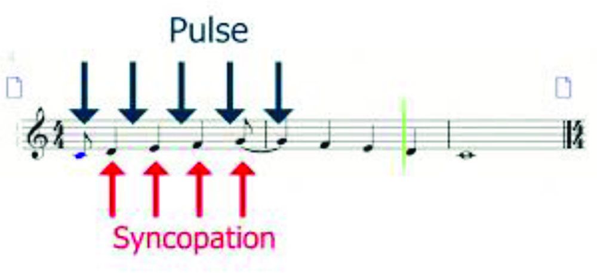

Syncopated Rhythm - Henry Balducci
The syncopated rhythm adds some life to song and has detail that is so small it can unnoticed to listeners. These rhythms have the hidden and weak notes within the beat.
- Syncopated rhythm emphasizes off-beats or weak beats to create unexpected accents.
- These rhtyhms are very commonly found in genres such as jazz, funk, reggae, and hip-hop.
- The rhythm adds a complexity and a sense of surprise to the music.
- They will make the song feel more dynamic and more liveley
- Artsist use this rhythm to bring a swingy or groove to the song.

Copyright- Henry Baklducci 2024.